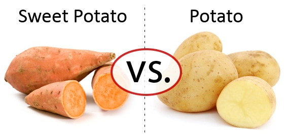

Because Tato decide to drop out of high school, his parents disowned him, calling him a scrublord. With nowhere else to go, Tato decided to go to the homeless shelter and sleep there. However, along the way, Tato was mugged by a group of sweet potatoes, the potatoes' mortal enemies. Tato has two options, fight them himself or pray to God so that he will smite Tato's enemies. What will he do?